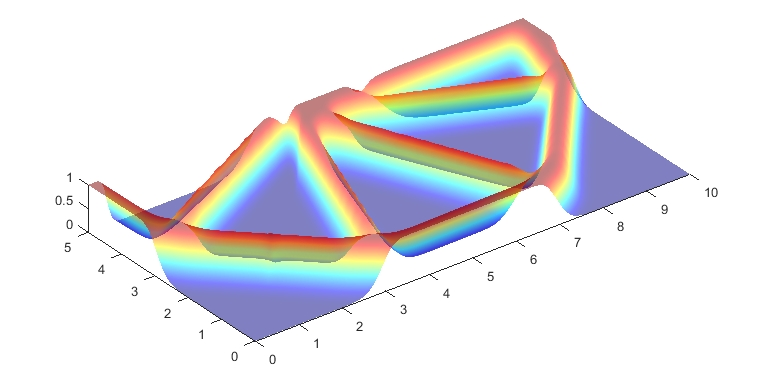
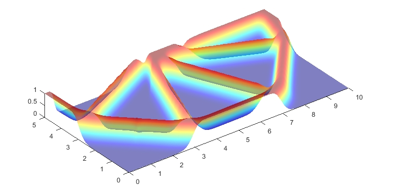

论文地址
IGA拓扑优化
一、概述
传统拓扑优化（如基于有限元方法）在结构建模与优化间存在割裂问题，几何建模依赖 CAD，而分析依赖 FEM，这种 几何与分析的不一致性 会引发误差积累与建模复杂性。为解决这一问题，论文引入 等几何分析（IGA），将 CAD 中常用的 NURBS（非均匀有理 B 样条）曲线直接用于分析建模，实现建模与分析的统一。
本论文基于 MATLAB 编写了一个轻量、紧凑、高效的 2D 等几何拓扑优化工具 IgaTop
二、模块介绍
| 模块名 |
功能说明 |
Pre_IGA |
控制点序列构造、自由度编号 |
Geom_Mod |
结构几何建模，生成 NURBS 模型 |
Boun_Cond |
设置 Dirichlet 和 Neumann 边界 |
Assemble |
组装全局刚度矩阵 |
FEA |
结构有限元求解 |
Sensitivity |
灵敏度分析 |
Filter |
应用灵敏度过滤 |
Optimization |
使用 MMA（移动渐近线）优化迭代 |
三、论文解读
\[
\text{Find: } \rho_{i,j} \quad (i=1,2,\dots,n;\ j=1,2,\dots,m)
\]
\[
\text{Min: } J(\mathbf{u}, \mathcal{X}) = \frac{1}{2} \int_{\Omega} \boldsymbol{\varepsilon}(\mathbf{u})^T\, \mathbf{D}(\mathcal{X}(\xi, \eta))\, \boldsymbol{\varepsilon}(\mathbf{u})\, d\Omega
\]
\[
\text{s.t. }
\begin{cases}
G(\mathcal{X}) = \frac{1}{|\Omega|} \int_\Omega \mathcal{X}(\xi, \eta)\, v_0\, d\Omega - V_{\text{max}} \leq 0 & \text{（体积约束）} \\
a(\mathbf{u}, \delta \mathbf{u}) = l(\delta \mathbf{u}),\quad \mathbf{u}|_{\Gamma_D} = \mathbf{g},\ \forall\, \delta \mathbf{u} \in H^1(\Omega) & \text{（平衡方程）} \\
0 \leq \rho_{i,j} \leq 1 & \text{（设计变量约束）}
\end{cases}
\]
以上为论文中提到的ITO的数学表示模型，表达一个典型的基于密度的最小柔度问题
其中
- \(ρ_{i,j}\)表示设计变量
- \(J(\mathbf{u}, \mathcal{X}) = \dfrac{1}{2} \int_\Omega \boldsymbol{\varepsilon}(\mathbf{u})^T \mathbf{D}(\mathcal{X}(\xi,\eta)) \boldsymbol{\varepsilon}(\mathbf{u})\, d\Omega \\\\[1.2ex]\)表示目标函数
- u：位移场 \(\epsilon\)：应变
- D：弹性刚度矩阵，与密度函数 \(\mathcal{X}\)有关
- \(G(\mathcal{X}) = \frac{1}{|\Omega|} \int_\Omega \mathcal{X}(\xi,\eta)\, v_0 \, d\Omega - V_{\text{max}} \leq 0\)
- 表示体积约束，限制材料总体积不超过某个阈值\(V_{max}\)
- \(a(\mathbf{u}, \delta \mathbf{u}) = l(\delta \mathbf{u}),\ \mathbf{u}|_{\Gamma_D} = \mathbf{g},\ \forall\, \delta \mathbf{u} \in H^1(\Omega)\)
- 对应结构的弱形式平衡方程（虚功原理）
- \(\Gamma_D\)：Dirichlet 边界，施加位移条件
- 最后一个为设计变量约束
母空间
母空间是指一个标准区间，例如：
- 1D：[-1,1]
- 2D：[-1,1] \(\times\) [-1,1]
参数空间
定义Nurbs基函数变量的标准空间
物理空间
将 NURBS 基函数定义的“参数空间”映射到结构所在的实际物理空间。使用 NURBS 基函数对参数空间点进行加权组合，实现曲线/面的光滑表达：\(\mathbf{x}(\xi, \eta) = \sum_i R_i(\xi, \eta)\, \mathbf{P}_i\)
在计算刚度矩阵时，需要使用到高斯积分，这被定义到母空间
IGA需要使用两个映射：
母空间 → 参数空间 → 物理空间
 上图为使用 IGA 实现拓扑优化的整体框架流程图
上图为使用 IGA 实现拓扑优化的整体框架流程图
3.1 Geom_Mod
在IGA中，二维Nurbs曲面使用如下公式表示
\[
\mathbf{x}(\xi, \eta) = \sum_{i=1}^{n} \sum_{j=1}^{m} R_{i,j}(\xi, \eta)\, \mathbf{P}_{i,j}
\]
其中
- \(R_{i,j}(\xi,\eta)\)：Nurbs基函数
- \(P_{i,j}\)：控制点坐标
Nurbs基函数如下：
\[
R_{i,j}(\xi, \eta) = \frac{N_{i,p}(\xi)\, M_{j,q}(\eta)\, w_{i,j}}{\sum_{k=1}^{n} \sum_{l=1}^{m} N_{k,p}(\xi)\, M_{l,q}(\eta)\, w_{k,l}}
\]
- \(N_{i,p}、M_{j,q}\)：两个方向的B样条基函数
- \(w_{i,j}\)：控制点权重
对于0阶B样条基函数，有如下性质
\[
N_{i,0}(\xi) =
\begin{cases}
1, & \text{if } \xi_i \leq \xi < \xi_{i+1} \\
0, & \text{otherwise}
\end{cases}
\]
对于高阶B样条基函数，遵从下面的递归公式
\[
N_{i,p}(\xi) = \frac{\xi - \xi_i}{\xi_{i+p} - \xi_i} N_{i,p-1}(\xi)
+ \frac{\xi_{i+p+1} - \xi}{\xi_{i+p+1} - \xi_{i+1}} N_{i+1,p-1}(\xi)
\]
NURBS工具箱:
- nrbmak：基于初始结点向量和控制点构建NURBS曲面
- nrbdegelev：提升NURBS基函数在第二个参数方向上的阶数
- nrbkntins： 在初始结点向量中均匀插入一系列新结点
- nrbbasisfun：用于在指定参数位置计算非零基函数和其控制点索引。
- nrbeval: 通过参数坐标计算实际物理坐标
3.2 Pre_IGA
根据Nurbs曲面得出返回三个参数——[CtrPts,Ele,GauPts]
CtrPts：控制点相关信息
| 字段名 |
中文解释 |
CtrPts.Cordis |
控制点在物理空间中的笛卡尔坐标，表示为 \((x, y, z, \omega)\) |
CtrPts.Num |
控制点的总数 |
CtrPts.NumU |
第一参数方向上的控制点数量 |
CtrPts.NumV |
第二参数方向上的控制点数量 |
CtrPts.Seque |
所有控制点的编号矩阵 |
Ele：IGA的单元
| 编号 |
字段名 |
含义 |
| 1 |
NumU |
第一参数方向（如 ξ）上 IGA 元素的总数（元素片段个数） |
| 2 |
NumV |
第二参数方向（如 η）上 IGA 元素的总数 |
| 3 |
Num |
IGA 总元素数（= NumU × NumV） |
| 4 |
Seque |
所有 IGA 元素的编号（按“左到右、下到上”的顺序）
|
| 5 |
KnotsU |
每个 IGA 元素在 第一参数方向上的 knot 跨度（区间） |
| 6 |
KnotsV |
每个 IGA 元素在 第二参数方向上的 knot 跨度（区间） |
| 7 |
CtrPtsNum |
每个元素中对其有影响的控制点数 = 非零 NURBS 基函数阶数（次数+1） |
| 8 |
CtrPtsNumU |
每个元素在第一参数方向上的控制点数 |
| 9 |
CtrPtsNumV |
每个元素在第二参数方向上的控制点数 |
| 10 |
CtrPtsCon |
控制点连接矩阵：第 i 行列出第 i 个元素的控制点编号（共 CtrPtsNum 个）
类似 FEM 中的 edofMat |
| 11 |
GauPtsNum |
每个元素的 高斯积分点数量，用于数值积分 |
Warning
其中Seque的顺序和控制点编号的顺序一致
GauPts：高斯积分点相关信息
| 字段名 |
中文解释 |
QuaPts |
母空间中高斯积分点的坐标\((\hat{\xi}, \hat{\eta}\)） |
Weigh |
每个高斯点的积分权重 |
Num |
所有高斯积分点的总数 |
CorU |
高斯点从母空间映射到参数空间时第一方向的 knot 对应 |
CorV |
高斯点从母空间映射到参数空间时第二方向的 knot 对应 |
Seque |
每个 IGA 元素对应的高斯点编号矩阵 |
Warning
高斯积分点被定义在母空间中，需要转换到参数空间，转换如下
\(CorU = ((u2 - u1) * \hat{\xi} + (u2 + u1)) / 2\)
\(CorV = ((v2 - v1) * \hat{\eta} + (v2 + v1)) / 2\)
高斯积分点的信息通过Guadrature函数给出
| function [quadweight, quadpoint] = Guadrature(quadorder, dim)
|
其中
- quadorder：高斯积分的阶数（例如 2阶、3阶）
- dim: 积分的维度，当前只处理了 dim = 2
- quadpoint: 高斯积分点坐标（二维）
- quadweight: 每个高斯点的积分权重
3.3 Boun_Cond
用于定义狄利克雷边界和纽曼边界条件
| function [DBoudary, F] = Boun_Cond(CtrPts, BoundCon, NURBS, Dofs_Num)
|
| 参数名 |
含义 |
CtrPts |
控制点信息结构体，来自 Pre_IGA，包含控制点坐标 Cordis、数量 Num、顺序编号 Seque 等，用于定义几何边界和施加载荷位置。 |
BoundCon |
整型编号，用于表示使用哪一个边界条件案例（共支持 5 种，如悬臂梁、MBB 梁、L 梁等），影响 Dirichlet/Neumann 条件的设置。 |
NURBS |
NURBS 曲面结构体，包含 knot 矢量、阶数、控制点、权重等信息，是计算基函数值与导数的关键。 |
Dofs.Num |
总自由度数量，等于控制点数 × 每个控制点的自由度（如二维问题中为 2），用于初始化力向量 F 的维度。 |
3.4 DDF
本章用于初始化控制密度以及获取高斯积分点处的DDF(密度分布函数)
- 分配一系列定义在控制点处的离散密度，称为控制密度
- 定义平滑机制以提高控制密度的平滑度
- 将NURBS基函数（用于构建初始结构几何的NURBS曲面）与平滑后的控制密度进行线性组合，从而为整个结构几何开发相应的密度分布函数(DDF)。
其数学表达式为：
\[
\mathcal{X}(\xi, \eta) = \sum_{i=1}^{n} \sum_{j=1}^{m} R_{i,j}^{p,q}(\xi, \eta)\, \tilde{\rho}_{i,j}
\]
DDF：简单点说就是通过Nurbs基函数对控制点密度进行加权累加，得到一个光滑的密度系统，每个点的密度都可以用对应控制点密度获得
| X.CtrPts = ones(CtrPts.Num,1); % 将所有控制点密度设置为1
GauPts.Cor = [reshape(GauPts.CorU',1,GauPts.Num); % 组合高斯积分点的UV坐标，获取完整坐标
reshape(GauPts.CorV',1,GauPts.Num)];
[GauPts.PCor,GauPts.Pw] = nrbeval(NURBS, GauPts.Cor); % 计算高斯积分点在物理空间下的坐标
GauPts.PCor = GauPts.PCor./GauPts.Pw; % 将齐次坐标转化为非齐次坐标
[N, id] = nrbbasisfun(GauPts.Cor, NURBS); % 获取每个积分点受影响的基函数值以及控制点id
R = zeros(GauPts.Num, CtrPts.Num); % 构建一个矩阵，行数为高斯积分点数，列数为控制点数，是一个稀疏矩阵，接下来会将每个高斯积分点受影响的控制点编号存入对应的行中
for i = 1:GauPts.Num, R(i,id(i,:)) = N(i,:); end % 第i行存在阶数个控制点非0（受影响）
R = sparse(R); % 转化为稀疏矩阵
[dRu, dRv] = nrbbasisfunder(GauPts.Cor, NURBS); % 获取高斯积分点在uv方向的导数
X.GauPts = R*X.CtrPts; % 得到高斯积分点的密度
|
3.5 Shep_Fun
定义平滑机制
| function [Sh, Hs] = Shep_Fun(CtrPts, rmin)
|
- 输入控制点和影响半径
- 返回加权矩阵Sh和每个控制点的加权和Hs
定义Shepard平滑函数如下：
\[
\tilde{\rho}_{i,j} =
\sum_{i=1}^{\mathcal{N}} \sum_{j=1}^{\mathcal{M}} \psi(\rho_{i,j}) \rho_{i,j} =
\sum_{i=1}^{\mathcal{N}} \sum_{j=1}^{\mathcal{M}}
\left( \frac{w(\rho_{i,j})}
{\sum_{\hat{i}=1}^{\mathcal{N}} \sum_{\hat{j}=1}^{\mathcal{M}} w(\rho_{\hat{i}, \hat{j}})} \right)
\rho_{i,j}=\frac{ \sum_{i=1}^{N} \sum_{j=1}^{M} w(\rho_{i,j}) \cdot \rho_{i,j} }
{ \sum_{i=1}^{N} \sum_{j=1}^{M} w(\rho_{i,j}) }
\]
\(\psi(\rho_{i,j})=\frac{w(\rho_{i,j})}
{\sum_{\hat{i}=1}^{\mathcal{N}} \sum_{\hat{j}=1}^{\mathcal{M}} w(\rho_{\hat{i}, \hat{j}})}\) 即为平滑函数
- \(\rho_{i,j}\)：原始控制密度
- \(\tilde{\rho}_{i,j}\)：平滑后的控制密度；
- \(w(\rho_{i,j})\)：权重函数，反映距离和影响范围
其中
\[w(v)=(1-v)^6+（35v^2+18v+3）\\ v = \frac{r}{r_{m}}
\]
- \(r_m\)：为影响区域的半径。
- \(r\)：当前控制密度与局部支撑域中其他控制密度之间的欧几里得距离
如下图所示

1
2
3
4
5
6
7
8
9
10
11
12
13
14
15
16
17
18
19
20
21
22 | function [Sh, Hs] = Shep_Fun(CtrPts, rmin)
Ctr_NumU = CtrPts.NumU; Ctr_NumV = CtrPts.NumV; % 控制点数量
iH = ones(Ctr_NumU*Ctr_NumV*(2*(ceil(rmin)-1)+1)^2,1); % 所有的控制点数量*预估每个控制点影响的控制点数量即为维度（预估非0元素的个数）
jH = ones(size(iH)); sH = zeros(size(iH)); % sH为值，iH和jH为非0元素矩阵下标
k = 0;
for j1 = 1:Ctr_NumV
for i1 = 1:Ctr_NumU
e1 = (j1-1)*Ctr_NumU+i1; % 对当前控制点，遍历半径rmin内的所有控制点
for j2 = max(j1-(ceil(rmin)-1),1):min(j1+(ceil(rmin)-1),Ctr_NumV)
for i2 = max(i1-(ceil(rmin)-1),1):min(i1+(ceil(rmin)-1),Ctr_NumU)
e2 = (j2-1)*Ctr_NumU+i2;
k = k+1;
iH(k) = e1;
jH(k) = e2;
theta = sqrt((j1-j2)^2+(i1-i2)^2)./rmin/sqrt(2); % 计算上面的v，即距离/半径
sH(k) = (max(0, (1-theta)).^6).*(35*theta.^2 + 18*theta + 3); % 计算权重
end
end
end
end
Sh = sparse(iH,jH,sH); Hs = sum(Sh,2); % 生成对应的权重矩阵，对权重矩阵的每一行累加得到对应控制点权重和
end
|
3.6 structural responses
本章用于求解结构响应，分为三个部分：Stiff_Ele2D、Stiff_Ass2D、Solving
- Stiff_Ele2D：计算所有等几何分析单元的刚度矩阵
- Stiff_Ass2D：组装所有等几何分析单元刚度矩阵
- Solving：解决结构响应问题
Stiff_Ele2D：
等几何分析单元刚度矩阵计算如下
\[
K_e = \int_{\Omega_e} B^T D B \, d\Omega_e
\]
需要使用高斯积分计算，由于高斯积分被定义在母空间中，故需要进行母空间->参数空间的映射，通过构建雅可比矩阵实现，如下式：
\[
K_e = \int_{\tilde{\Omega}_e} B^T D B |J_1||J_2| \, d\tilde{\Omega}_e
\]
\(|J_1|、|J_2|\)分别是x和y方向的雅可比矩阵
| [KE, dKE, dv_dg] = Stiff_Ele2D(X, penal, Emin, DH, CtrPts, Ele, GauPts, dRu, dRv);
|
| 参数 |
含义 |
X |
结构体数组，包含设计变量密度的信息。具体包含：
- CtrPts（控制点密度）
- GauPts（高斯积分点密度）
- DDF（设计域中的密度场） |
penal |
惩罚参数，SIMP模型中通常取3，用于控制材料插值的非线性。 |
Emin |
空材料的最小杨氏模量，避免数值奇异性。 |
DH |
材料本构矩阵D（如平面应力或应变条件下的弹性矩阵）。 |
CtrPts |
控制点信息（NURBS控制点）。 |
Ele |
等几何单元 |
GauPts |
高斯积分点的位置和权重。 |
dRu |
NURBS基函数对第一个参数方向（u）的导数。 |
dRv |
NURBS基函数对第二个参数方向（v）的导数。 |
参数空间->物理空间的雅可比矩阵推导如下：
根据定义
\[
\mathbf{J} =
\frac{\partial (x, y)}{\partial (\xi, \eta)} =
\begin{bmatrix}
\frac{\partial x}{\partial \xi} & \frac{\partial x}{\partial \eta} \\
\frac{\partial y}{\partial \xi} & \frac{\partial y}{\partial \eta}
\end{bmatrix}
\]
上式的x是高斯点的x，不是控制点，根据下式可知，高斯点的坐标是由控制点插值得到
\[
\mathbf{x} =
\begin{bmatrix}
x \\
y
\end{bmatrix}
=
\sum_{i=1}^{n} N_i(\xi, \eta)
\begin{bmatrix}
x_i \\
y_i
\end{bmatrix}
\]
故每个元素对参数坐标的导数如下
\[
\frac{\partial x}{\partial \xi} = \sum_{i=1}^{n} \frac{\partial N_i}{\partial \xi} \cdot x_i
\]
\[
\frac{\partial x}{\partial \eta} = \sum_{i=1}^{n} \frac{\partial N_i}{\partial \eta} \cdot x_i
\]
\[
\frac{\partial y}{\partial \xi} = \sum_{i=1}^{n} \frac{\partial N_i}{\partial \xi} \cdot y_i
\]
\[
\frac{\partial y}{\partial \eta} = \sum_{i=1}^{n} \frac{\partial N_i}{\partial \eta} \cdot y_i
\]
带入J可知
\[
\mathbf{J} =
\begin{bmatrix}
\frac{\partial N_1}{\partial \xi} & \cdots & \frac{\partial N_n}{\partial \xi} \\
\frac{\partial N_1}{\partial \eta} & \cdots & \frac{\partial N_n}{\partial \eta}
\end{bmatrix}
\cdot
\begin{bmatrix}
x_1 & y_1 \\
x_2 & y_2 \\
\vdots & \vdots \\
x_n & y_n
\end{bmatrix}
\]
体现在代码中只有两行
| dPhy_dPara = dR_dPara*Ele_CoCtPt'; % phy表示物理坐标，Para表示参数坐标，R表示基函数
J1 = dPhy_dPara;
|
接下来为了计算位移-应变矩阵B，需要基函数对物理坐标的导数，使用链式法则如下：
\[
\frac{\partial N}{\partial x} =
\frac{\partial N}{\partial \xi} \cdot \frac{\partial \xi}{\partial x} +
\frac{\partial N}{\partial \eta} \cdot \frac{\partial \eta}{\partial x}
\]
\[
\frac{\partial N}{\partial y} =
\frac{\partial N}{\partial \xi} \cdot \frac{\partial \xi}{\partial y} +
\frac{\partial N}{\partial \eta} \cdot \frac{\partial \eta}{\partial y}
\]
转变为矩阵形式：
\[
\begin{bmatrix}
\frac{\partial N}{\partial x} \\
\frac{\partial N}{\partial y}
\end{bmatrix}
=
\begin{bmatrix}
\frac{\partial \xi}{\partial x} & \frac{\partial \eta}{\partial x} \\
\frac{\partial \xi}{\partial y} & \frac{\partial \eta}{\partial y}
\end{bmatrix}
\cdot
\begin{bmatrix}
\frac{\partial N}{\partial \xi} \\
\frac{\partial N}{\partial \eta}
\end{bmatrix}
\]
可以发现
\[
\mathbf{J}_1 =
\frac{\partial (x, y)}{\partial (\xi, \eta)}
\implies
\mathbf{J}_1^{-1} =
\frac{\partial (\xi, \eta)}{\partial (x, y)}
\]
故
\[
\begin{bmatrix}
\frac{\partial N}{\partial x} \\
\frac{\partial N}{\partial y}
\end{bmatrix}
=
\mathbf{J}_1^{-1} \cdot
\begin{bmatrix}
\frac{\partial N}{\partial \xi} \\
\frac{\partial N}{\partial \eta}
\end{bmatrix}
\]
在代码中体现如下
| dR_dPhy = inv(J1)*dR_dPara;
|
从母空间到参数空间的转换如下：
\[
\begin{bmatrix}
u \\
v
\end{bmatrix}
=
\begin{bmatrix}
\frac{u_{\text{max}} - u_{\text{min}}}{2} & 0 \\
0 & \frac{v_{\text{max}} - v_{\text{min}}}{2}
\end{bmatrix}
\begin{bmatrix}
\xi \\
\eta
\end{bmatrix}
+
\begin{bmatrix}
\frac{u_{\text{max}} + u_{\text{min}}}{2} \\
\frac{v_{\text{max}} + v_{\text{min}}}{2}
\end{bmatrix}
\]
故雅可比矩阵\(J_2\)为
\[
J_2 =
\frac{\partial(u, v)}{\partial(\xi, \eta)} =
\begin{bmatrix}
\frac{u_{\text{max}} - u_{\text{min}}}{2} & 0 \\
0 & \frac{v_{\text{max}} - v_{\text{min}}}{2}
\end{bmatrix}
\]
整体代码注释如下：
1
2
3
4
5
6
7
8
9
10
11
12
13
14
15
16
17
18
19
20
21
22
23
24
25
26
27
28
29
30
31
32
33
34
35
36
37
38
39
40
41
42
43
44
45
46
47
48
49
50
51
52
53
54
55
56
57
58
59
60
61
62
63
64
65
66
67
68
69
70
71
72
73
74
75
76
77
78
79
80
81
82
83
84
85
86 | function [KE, dKE, dv_dg] = Stiff_Ele2D(X, penal, Emin, DH, CtrPts, Ele, GauPts, dRu, dRv)
% 计算二维等几何单元的刚度矩阵，刚度矩阵对密度的导数，以及体积对密度的导数
% 初始化输出变量
KE = cell(Ele.Num, 1); % 存储每个单元的刚度矩阵
dKE = cell(Ele.Num, 1); % 存储每个单元刚度矩阵对密度的导数
dv_dg = zeros(GauPts.Num, 1); % 存储每个高斯点的体积对密度的导数
Nen = Ele.CtrPtsNum; % 每个单元对应的控制点数量（自由度=2*Nen）
% 遍历每个单元
for ide = 1:Ele.Num
% 获取当前单元在参数空间U和V方向的索引
[idv, idu] = find(Ele.Seque == ide);
% 获取当前单元在U方向的节点区间
Ele_Knot_U = Ele.KnotsU(idu, :);
% 获取当前单元在V方向的节点区间
Ele_Knot_V = Ele.KnotsV(idv, :);
% 获取当前单元对应的控制点编号
Ele_NoCtPt = Ele.CtrPtsCon(ide, :);
% 获取当前单元控制点的物理坐标（二维）
Ele_CoCtPt = CtrPts.Cordis(1:2, Ele_NoCtPt);
% 初始化当前单元的刚度矩阵（2*Nen × 2*Nen）
Ke = zeros(2*Nen, 2*Nen);
% 初始化当前单元的刚度矩阵对每个高斯点密度的导数（cell存储）
dKe = cell(Ele.GauPtsNum, 1);
% 遍历当前单元内的所有高斯积分点
for i = 1:Ele.GauPtsNum
% 获取当前高斯点的全局编号
GptOrder = GauPts.Seque(ide, i);
% 获取当前高斯点的基函数对参数空间（ξ,η）的导数
dR_dPara = [dRu(GptOrder, :); dRv(GptOrder, :)];
% 计算雅可比矩阵 J1（从参数空间映射到物理空间）
dPhy_dPara = dR_dPara * Ele_CoCtPt';
J1 = dPhy_dPara;
% 计算基函数对物理空间（x,y）的导数
dR_dPhy = inv(J1) * dR_dPara;
% 构建应变-位移矩阵Be
Be(1, 1:Nen) = dR_dPhy(1, :); % εx 对x方向位移的偏导
Be(2, Nen+1:2*Nen) = dR_dPhy(2, :); % εy 对y方向位移的偏导
Be(3, 1:Nen) = dR_dPhy(2, :); % γxy 对x方向位移的y偏导
Be(3, Nen+1:2*Nen) = dR_dPhy(1, :); % γxy 对y方向位移的x偏导
% 计算参数空间（ξ,η）到父单元空间（[-1,1]）的缩放矩阵
dPara_dPare(1, 1) = (Ele_Knot_U(2) - Ele_Knot_U(1)) / 2;
dPara_dPare(2, 2) = (Ele_Knot_V(2) - Ele_Knot_V(1)) / 2;
J2 = dPara_dPare;
% 完整的Jacobian，从父单元空间到物理空间
J = J1 * J2;
% 当前高斯点的积分权重（Jacobian行列式 * 高斯点权重）
weight = GauPts.Weigh(i) * det(J);
% 材料插值（SIMP），计算当前高斯点的有效杨氏模量
E_effective = Emin + X.GauPts(GptOrder, :).^penal * (1 - Emin);
% 当前高斯点对刚度矩阵的贡献
Ke = Ke + E_effective * weight * (Be' * DH * Be);
% 当前高斯点刚度矩阵对密度的导数（灵敏度）
dKe{i} = (penal * X.GauPts(GptOrder, :).^(penal - 1) * (1 - Emin)) * weight * (Be' * DH * Be);
% 当前高斯点体积对密度的导数（Jacobian行列式 * 权重）
dv_dg(GptOrder) = weight;
end
% 存储当前单元的刚度矩阵和导数
KE{ide} = Ke;
dKE{ide} = dKe;
end
end
|
Stiff_Ass2D
函数接口如下：
组装所有的局部刚度矩阵
| function [K] = Stiff_Ass2D(KE, CtrPts, Ele, Dim, Dofs_Num)
|
| 变量名 |
含义说明 |
KE |
每个单元的局部刚度矩阵（cell数组） |
CtrPts |
控制点结构体，含有总数 CtrPts.Num |
Ele |
单元结构体，包含每个单元关联的控制点编号等信息 |
Dim |
空间维度（通常为2，表示二维问题） |
Dofs_Num |
全局自由度总数（= 控制点个数 × 维度） |
整体代码注释如下：
1
2
3
4
5
6
7
8
9
10
11
12
13
14
15
16
17
18
19
20
21
22
23
24
25
26
27
28
29
30
31
32 | % 初始化稀疏矩阵三元组格式的行列索引和数值（提前分配空间，防止动态扩展）
II = zeros(Ele.Num * Dim * Ele.CtrPtsNum * Dim * Ele.CtrPtsNum, 1); % 行索引
JJ = II; % 列索引
KX = II; % 值
ntriplets = 0; % 三元组的计数器
% 遍历每个单元进行刚度矩阵装配
for ide = 1:Ele.Num
Ele_NoCtPt = Ele.CtrPtsCon(ide,:); % 当前单元对应的控制点编号
edof = [Ele_NoCtPt, Ele_NoCtPt + CtrPts.Num];
% 每个控制点在二维平面上有两个自由度（x, y），
% edof的行数为1
% 第一个一半是x方向，自由度编号为原编号
% 第二个一半是y方向，自由度编号偏移CtrPts.Num
% 遍历当前单元局部刚度矩阵的每个元素（按行列）
for krow = 1:numel(edof)
for kcol = 1:numel(edof)
ntriplets = ntriplets + 1; % 当前三元组编号加一
II(ntriplets) = edof(krow); % 全局行号
JJ(ntriplets) = edof(kcol); % 全局列号
KX(ntriplets) = KE{ide}(krow, kcol); % 值：来自当前单元的刚度矩阵条目
end
end
end
% 将三元组数据转换为稀疏矩阵
K = sparse(II, JJ, KX, Dofs_Num, Dofs_Num);
% 保证刚度矩阵对称性（修正数值误差），强制对称化
K = (K + K') / 2;
end
|
Warning
全局刚度矩阵的规模为 \(自由度 \times 控制点个数 \times自由度 |times 控制点个数\)，sparse会自动将相同行列的下标处的值相加，刚度矩阵表示的是控制点自由度间的传递关系
solving
函数接口如下：
求解器，根据 \(U=K/F\)求解全局位移
| function U = Solving(CtrPts, DBoudary, Dofs, K, F, BoundCon)
|
| 参数名 |
说明 |
CtrPts |
控制点信息，包括控制点总数 CtrPts.Num 等 |
DBoudary |
边界条件信息，包含被固定的控制点编号 |
Dofs |
自由度信息，含总自由度数 Dofs.Num、固定自由度等 |
K |
全局刚度矩阵，大小为 2N × 2N，其中 N 为控制点数 |
F |
全局载荷向量，大小为 2N × 1 |
BoundCon |
边界条件编号，表示具体结构问题类型 |
| 输出参数 |
|
U |
全局自由度的位移解，大小为 2N × 1 |
整体代码注释如下：
1
2
3
4
5
6
7
8
9
10
11
12
13
14
15
16
17
18
19
20
21
22
23
24
25
26
27
28
29
30
31
32
33 | function U = Solving(CtrPts, DBoudary, Dofs, K, F, BoundCon)
% 输入参数：
% CtrPts：控制点结构体，包含控制点数量信息
% DBoudary：包含固定控制点编号的信息（边界条件）
% Dofs：自由度结构体，含总自由度数等
% K：全局刚度矩阵（2N×2N）
% F：全局载荷向量
% BoundCon：边界条件编号（表示哪种结构问题）
% 输出：
% U：所有自由度的位移解
switch BoundCon
case {1, 4, 5} % 情况1、4、5：固定边界在同一组控制点上
U_fixeddofs = DBoudary.CtrPtsOrd; % 获取x方向固定自由度编
V_fixeddofs = DBoudary.CtrPtsOrd + CtrPts.Num; % y方向编号在x方向基础上偏移CtrPts.Num
case {2, 3} % 情况2、3：边界可能在两个不同位置
U_fixeddofs = DBoudary.CtrPtsOrd1; % x方向固定控制点编号
V_fixeddofs = [DBoudary.CtrPtsOrd1; DBoudary.CtrPtsOrd2] + CtrPts.Num;
% y方向包含两个部分，编号加偏移
end
Dofs.Ufixed = U_fixeddofs; % 存储x方向固定自由度
Dofs.Vfixed = V_fixeddofs; % 存储y方向固定自由度
Dofs.Free = setdiff(1:Dofs.Num, [Dofs.Ufixed; Dofs.Vfixed]);
% 所有自由度编号为1~2N，从中移除固定自由度，得到自由自由度编号列表
U = zeros(Dofs.Num, 1); % 初始化全局位移向量，所有自由度初值为0
% 求解线性系统：仅在自由自由度上求解 K·U = F
% 固定自由度的位移为0（默认），求解剩余自由度对应的位移
U(Dofs.Free) = K(Dofs.Free, Dofs.Free) \ F(Dofs.Free);
end
|
3.7 sensitivity analysis
本章进行灵敏度分析
下式为目标函数对DDF的导数
\[
\begin{cases}
\frac{\partial J}{\partial \mathcal{X}} = -\frac{1}{2} \int_{\Omega} \varepsilon(\mathbf{u})^T \left( \gamma \mathcal{X}^{\gamma - 1} \mathbf{D}_0 \right) \varepsilon(\mathbf{u}) \, d\Omega \\
\frac{\partial G}{\partial \mathcal{X}} = \frac{1}{|\Omega|} \int_{\Omega} v_0 \, d\Omega
\end{cases}
\]
由于DDF是由平滑后的密度值插值得到的（由4.5章可知），
\[
\mathcal{X}(\xi,\eta) = \sum_{i,j} R^{p,q}_{i,j}(\xi,\eta) \cdot \tilde{\rho}_{i,j}
\]
故通过链式法则DDF对原密度值通过有如下表达式：
\[
\frac{\partial \mathcal{X}}{\partial \rho_{i,j}} = \frac{\partial \mathcal{X}}{\partial \tilde{\rho}_{i,j}} \cdot \frac{\partial \tilde{\rho}_{i,j}}{\partial \rho_{i,j}} = R^{p,q}_{i,j}(\xi,\eta) \cdot \psi(\rho_{i,j})
\]
则最终目标函数对设计变量的表达式如下：
\[
\begin{cases}
\frac{\partial J}{\partial \rho_{i,j}} = -\frac{1}{2} \int_{\Omega} \varepsilon(\mathbf{u})^T \gamma \mathcal{X}^{\gamma - 1} R^{p,q}_{i,j}(\xi,\eta) \psi(\rho_{i,j}) \mathbf{D}_0 \varepsilon(\mathbf{u}) \, d\Omega \\
\frac{\partial G}{\partial \rho_{i,j}} = \frac{1}{|\Omega|} \int_{\Omega} R^{p,q}_{i,j}(\xi,\eta) \psi(\rho_{i,j}) v_0 \, d\Omega
\end{cases}
\]
整体代码注释如下：
对于体积对设计变量的导数
\[
\frac{\partial G}{\partial \rho_{i,j}} = \frac{1}{|\Omega|} \int_{\Omega} v_0 \, d\Omega = \frac{1}{|\Omega|} \int_{\Omega} \frac{\partial \mathcal{X}(\xi, \eta)}{\partial \rho_{i,j}} \, d\Omega
\]
而由上面推导可知：
\[
\frac{\partial \mathcal{X}(\xi, \eta)}{\partial \rho_{i,j}} = R^{p,q}_{i,j}(\xi, \eta) \cdot \psi(\rho_{i,j})
\]
故
\[
\frac{\partial G}{\partial \rho_{i,j}} = \frac{1}{|\Omega|} \int_{\Omega} R^{p,q}_{i,j}(\xi, \eta) \cdot \psi(\rho_{i,j}) \, d\Omega
\]
1
2
3
4
5
6
7
8
9
10
11
12
13
14
15
16
17
18
19
20
21
22
23
24
25 | %% Objective function and sensitivity analysis
J = 0; % 初始化目标函数（结构柔度）
dJ_dg = zeros(GauPts.Num,1); % 初始化目标函数对高斯点密度的灵敏度向量
for ide = 1:Ele.Num % 遍历所有单元
Ele_NoCtPt = Ele.CtrPtsCon(ide,:); % 当前单元对应的控制点编号
edof = [Ele_NoCtPt, Ele_NoCtPt + CtrPts.Num]; % 当前单元自由度编号（x方向 + y方向）
Ue = U(edof,1); % 提取当前单元对应的位移向量（长度为2×控制点个数）
J = J + Ue' * KE{ide} * Ue; % 柔度目标函数累加：J += u_e^T * K_e * u_e
for i = 1:Ele.GauPtsNum % 遍历该单元包含的所有高斯点
GptOrder = GauPts.Seque(ide, i); % 获取该高斯点在全局高斯点序列中的编号
dJ_dg(GptOrder) = -Ue' * dKE{ide}{i} * Ue;
% 计算目标函数对该高斯点密度的导数（灵敏度项）
% ∂J/∂g_i = -u_e^T * ∂K_e/∂g_i * u_e
end
end
dJ_dp = R' * dJ_dg; % 将高斯点上的灵敏度通过基函数投影回控制点：dJ/dρ
dJ_dp = Sh * (dJ_dp ./ Hs); % 使用 Shepard 权重对控制点导数进行平滑处理，减少震荡
dv_dp = R' * dv_dg; % 同理，将体积约束导数从高斯点投影回控制点
dv_dp = Sh * (dv_dp ./ Hs); % 对体积导数进行平滑处理
|
3.8 OC法
函数接口：
| function X = OC(X, R, Vmax, Sh, Hs, dJ_dp, dv_dp)
|
| 参数名 |
含义 |
X.CtrPts |
控制点处的当前密度（设计变量），为列向量 |
R |
NURBS 基函数矩阵，用于将控制点密度映射到高斯点密度 |
Vmax |
最大允许体积分数（约束材料使用量） |
Sh |
Shepard 平滑矩阵，用于平滑设计变量 |
Hs |
Shepard 平滑归一化因子，避免除以0 |
dJ_dp |
目标函数对控制点密度的导数（柔度灵敏度） |
dv_dp |
体积约束函数对控制点密度的导数（体积灵敏度） |
函数整体注释如下：
1
2
3
4
5
6
7
8
9
10
11
12
13
14
15
16
17
18
19
20
21
22
23 | function X = OC(X, R, Vmax, Sh, Hs, dJ_dp, dv_dp)
% 初始化拉格朗日乘子的搜索范围 [l1, l2]
% move 是设计变量最大变化幅度（防止变化过快）
l1 = 0; l2 = 1e9; move = 0.2;
while (l2-l1)/(l1+l2) > 1e-3
lmid = 0.5*(l2+l1);
% OC 更新核心公式：
% 更新控制点密度变量，限制在 [ρ - move, ρ + move] 内，并保持在 [0, 1]
X.CtrPts_new = max(0,max(X.CtrPts-move,min(1,min(X.CtrPts+move,X.CtrPts.*sqrt(-dJ_dp./dv_dp/lmid)))));
% 对更新后的设计变量进行 Shepard 平滑处理
X.CtrPts_new = (Sh*X.CtrPts_new)./Hs;
% 将新的控制点密度投影到高斯点密度
X.GauPts = R*X.CtrPts_new;
% 判断当前平均密度是否超过最大体积分数
if mean(X.GauPts(:)) > Vmax
l1 = lmid;
else
l2 = lmid;
end
end
end
|
3.9 Plot_Data and Plot_Topy
Plot_Data：生成用于绘图的图像窗口布局参数（Pos），计算用于绘图的密度场坐标网格（DenFied）
| function [DenFied, Pos] = Plot_Data(Num, NURBS)
|
| 参数名 |
类型 |
含义说明 |
Num |
向量 |
NURBS 网格在两个方向的单元数量，如 [20, 5] 表示 20×5 网格 |
NURBS |
结构体 |
NURBS 几何结构，包含控制点、阶数、节点矢量等 |
DenFied |
结构体 |
绘图所需的密度场数据，包括基函数、物理坐标网格等 |
Pos |
结构体 |
图像窗口位置参数，用于多子图布局（p1 到 p4） |
Plot_Topy：等几何拓扑优化结果的可视化函数，绘制了设计变量分布、密度场和结构拓扑图等图形。
| function [X] = Plot_Topy(X, GauPts, CtrPts, DenFied, L, W, Pos)
|
| 参数名 |
类型 |
说明 |
X |
结构体 |
包含控制点密度 CtrPts、高斯点密度 GauPts、输出 DDF 等 |
GauPts |
结构体 |
高斯点的物理坐标 PCor 等 |
CtrPts |
结构体 |
控制点坐标 Cordis，数量等 |
DenFied |
结构体 |
绘图密度场所需信息，包括 Ux, Uy, N, id |
L |
数值 |
结构在 X 方向的长度（用于设定绘图坐标轴范围） |
W |
数值 |
结构在 Y 方向的宽度 |
Pos |
结构体 |
图形窗口的布局位置（由 Plot_Data 函数生成） |
四、实验结果
本章展示五种不同的模型，每种模型分别展示五副图，依次为：
- 控制点处的密度
- 高斯点处的密度
- 密度分布函数 DDF
- 高斯点处密度大于 0.5 的二维投影
- DDF 的等值线，近似表示结构拓扑边界
4.1 悬臂梁


4.2 MBB梁


4.3 Michell 型结构


4.4 L 型梁

 

4.5 四分之一圆环